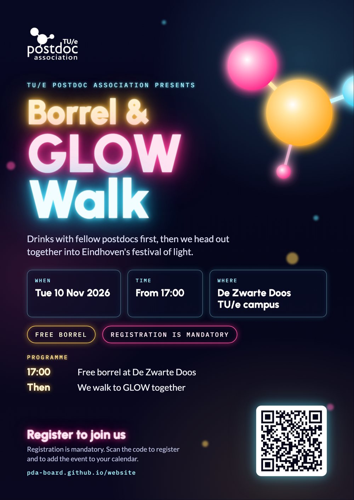

Tue 10 Nov 2026From 17:00Zwarte Doos, campus
Borrel & GLOW Walk
A free borrel at Zwarte Doos, then we head out together for a walk through GLOW, Eindhoven's light festival. Registration is mandatory.
Postdocs sit between a PhD and whatever comes next — temporary contracts, big responsibilities, and a lot of open questions. The PDA is the place where TU/e postdocs meet, learn from each other, and speak with one voice.
A free borrel at Zwarte Doos, then we head out together for a walk through GLOW, Eindhoven's light festival. Registration is mandatory.
Drinks with fellow postdocs at De Zwarte Doos, then we head out together into GLOW, Eindhoven's festival of light.
Free, but registration is mandatory. The registration link will be posted here.
Registration opens soon
Founded in 2020, the TU/e Postdoctoral Association gives postdocs a platform to network and get support specifically tailored to their needs — across all departments and research institutes of Eindhoven University of Technology.
“As postdocs we often have temporary academic appointments and are somewhere ‘in‑between’, facing many uncertainties in our career and personal life.”
Build a stronger and broader academic and personal network — beyond your own group, department and discipline.
Training and workshops tailored to postdocs, plus career-development advice for the next step — inside or outside academia.
One voice for postdocs towards the university — on contracts, recognition, onboarding and wellbeing — and a link to the national network.
Open to every postdoc at TU/e. Members get invitations by email — and a few events are members-only.
From 17:00 · Zwarte Doos, TU/e campus · A free borrel, then a walk together through the GLOW light festival. Registration is mandatory. Flyer (PDF)
14:00 – 16:00, drinks after · Atlas 0.710 · Thirteen PhD, EngD and postdoc researchers pitch their own research in three minutes. Jury prizes of €750 and €500, plus a €500 audience prize. Organised by the TU/e Communication Expertise Center as part of WinTU/er Wonderland. Details on tue.nl
Winter Village, TU/e campus · A Christmas quiz together with Nexus, the PhD Association. Date and details to be announced.
Zwarte Doos Filmzaal · Ten three-minute pitches moderated by Barry W. Fitzgerald, co-organised with EIRES. Two jury prizes and an audience award.
Zwarte Doos Filmzaal · The 2025 edition of the PDA's research pitch competition.
TU/e campus · Postdocs present their published work to a broad audience; prizes up to €750.
Zwarte Doos Filmzaal · Ten finalists pitched, chaired by Barry W. Fitzgerald, and the PDA celebrated its second anniversary.
Board members talk with Barry Fitzgerald about life as a postdoc at TU/e and why the association was founded.
An initiative of the PDA and TU/e's research institutes: ten papers selected from 25 submissions.
Every year the PDA celebrates postdocs who can explain their published research to people outside their field. Ten candidates get three minutes on stage and two minutes of questions, in front of a jury and a full room in the Zwarte Doos.
Two winners are chosen by the jury, and a third by the audience. The afternoon closes the way every good TU/e event does: with a borrel.
Eight board members, volunteering next to their day jobs.
There is always room for people who want to organise an event or help with the newsletter. Interested in joining the board? Let us know.
Every postdoc at TU/e can become a member. It takes a minute and you can leave whenever you like.
Membership applications go through the PDA's form on the TU/e website. It asks for your name, email address, department, and how you heard about the PDA.
Things we get asked about most.